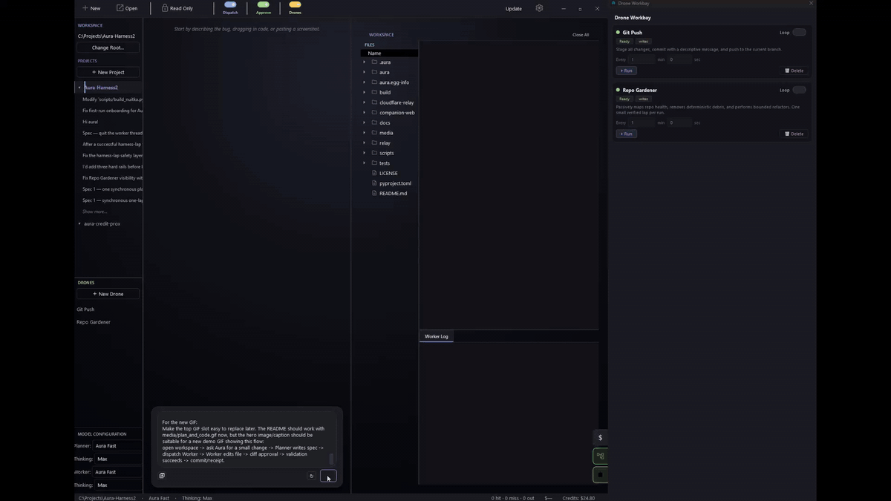
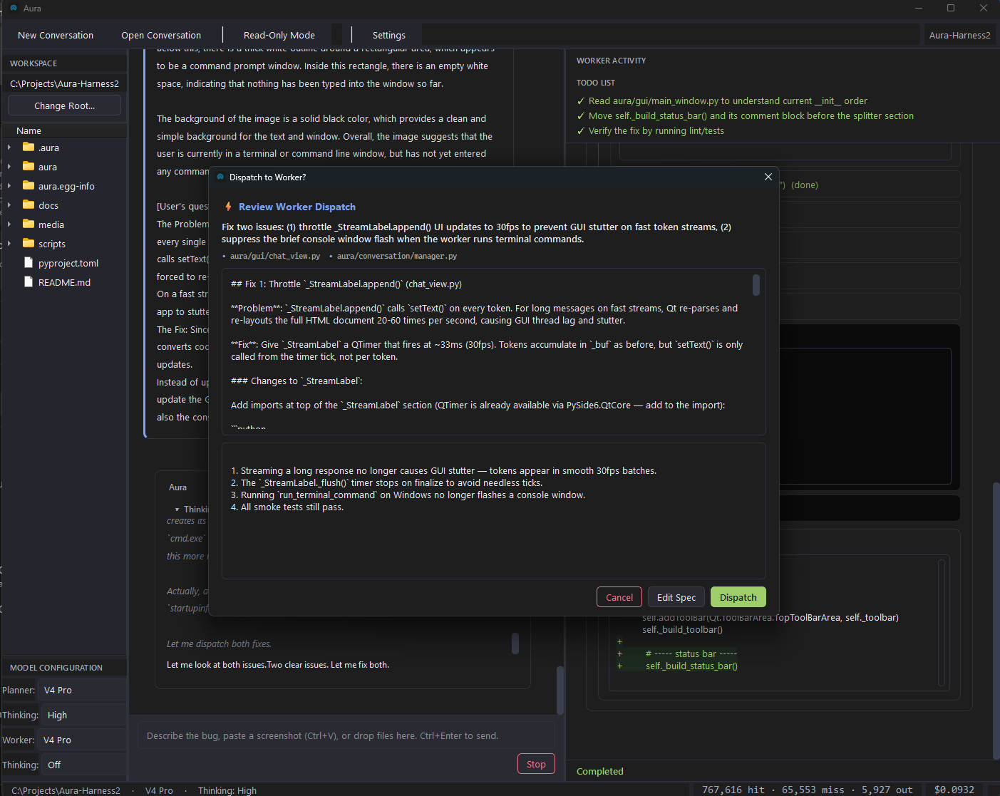
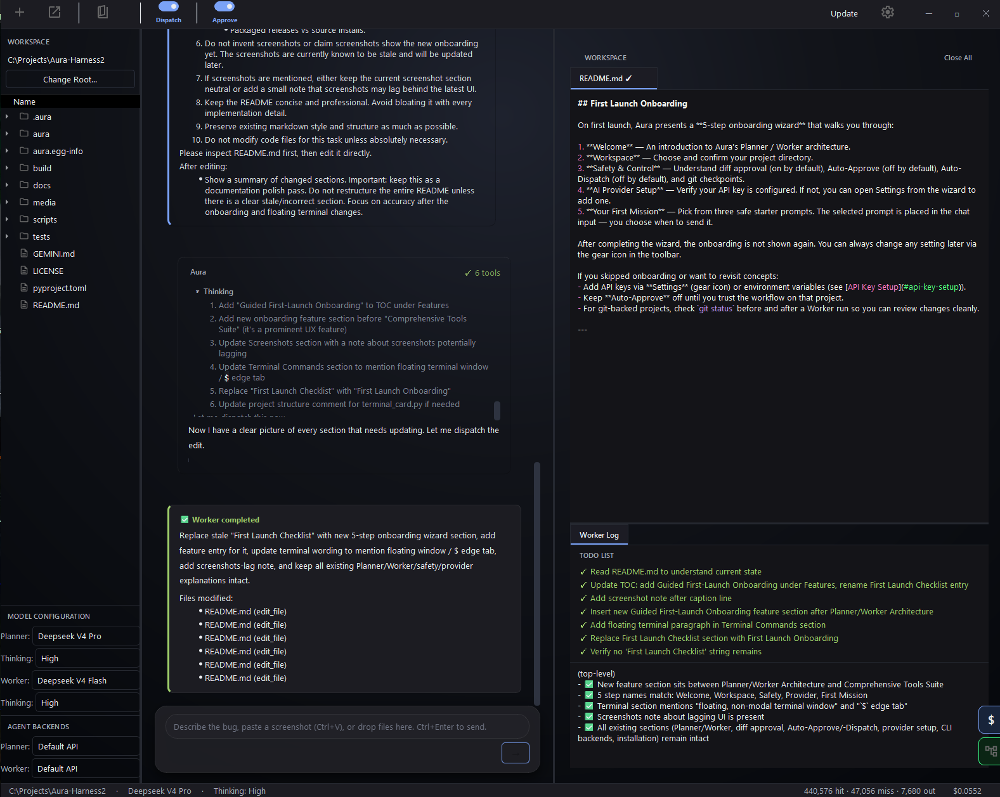

Ask
Tell Aura what you want done. The harness starts with your request.

Open-source desktop coding harness
Bring any model. Aura makes it plan, prove, and validate its work.
Aura is an open-source desktop coding harness that makes any model better at coding than it is alone. It plans before writing, edits through reviewable diffs, validates the result, recovers or aborts cleanly when validation fails, and leaves receipts for every run.
How Aura Works
Aura separates planning from execution so the agent has a job, the user has control, and every meaningful step can be reviewed.
Tell Aura what you want done. The harness starts with your request.
Planner reads the workspace and writes a structured spec before code is touched.
Send the approved spec to the Worker for execution against the real repo.
Every proposed edit shows as a unified diff. Approve or reject before writes.
Checks run after every change. Retry on failure or abort cleanly.
Receipts with tool calls, files changed, validation, and cost.
Built with Aura
Aura wrote most of itself through the same harness loop. The screenshots below show real workflow moments from the desktop cockpit.




Aura wrote most of itself through this same loop.
2+ billion DeepSeek tokens · nearly 30,000 API requests · May–June 2026
Model Access
BYOK is the trust engine — always available, always free. Aura Credits are optional convenience for starting fast without API key setup. Use either path, or mix providers between Planner and Worker.
Connect your own API keys for DeepSeek, OpenAI, Anthropic, Gemini, or OpenRouter. Your key, your billing, your data.
Buy credits, select Aura as a provider, and start without managing API keys. Not required — useful when you want to skip setup.
Use BYOK for one role and Credits for another. Swap providers per Planner or Worker. The harness stays the same.
Aura Companion
Companion lets you steer Aura from your phone while the desktop stays responsible for the real workspace. Browse projects, send Planner messages, dispatch specs, watch live execution, and review receipts away from the keyboard.


Drones
Drones are reusable automation cards for repeatable repo work. Each run leaves receipts and respects write policies.
Use read-only, ask-before-writes, or normal diff approval depending on the task.
Guardrails include clean-worktree checks, protected paths, changed-file caps, and validation gates.
Each run leaves enough context to know what happened afterward.
Open Source Funding
The project is open source and built in public. Sponsorship helps cover hosting, relay infrastructure, packaging, and the time needed to keep the desktop harness moving.